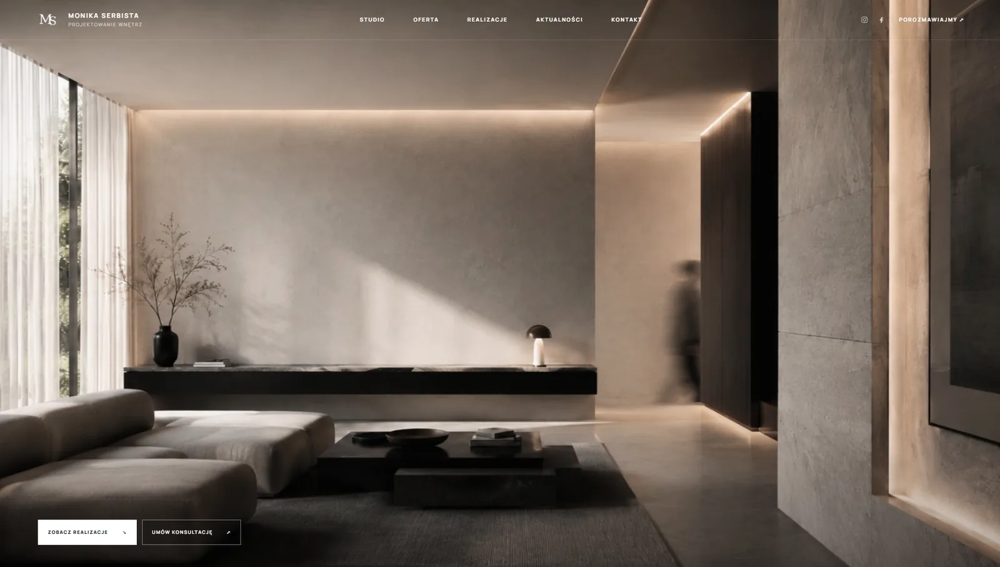

Obraz przed tekstem
Zmienne sceny wnętrz budują poziom marki jeszcze przed pierwszym zdaniem.
Case study / projektowanie wnętrz
Strona dla doświadczonej projektantki wnętrz, w której obrazy budują emocje, a struktura porządkuje szeroką ofertę i prowadzi do konkretnego briefu.

Cel projektu
Marka potrzebowała strony, która pomieści realizacje, ofertę, proces, rozbudowany kontakt oraz treści wizerunkowe, a jednocześnie pozostanie spokojna i premium. Kierunek opiera się na monochromatycznej palecie, pełnoekranowych kadrach, rytmicznej typografii i subtelnych animacjach.
Zmienne sceny wnętrz budują poziom marki jeszcze przed pierwszym zdaniem.
Poziomy pasek pokazuje naturalne kolory i zatrzymuje się przy interakcji.
Pytania pomagają od razu określić typ inwestycji, metraż i termin.
Następny projekt